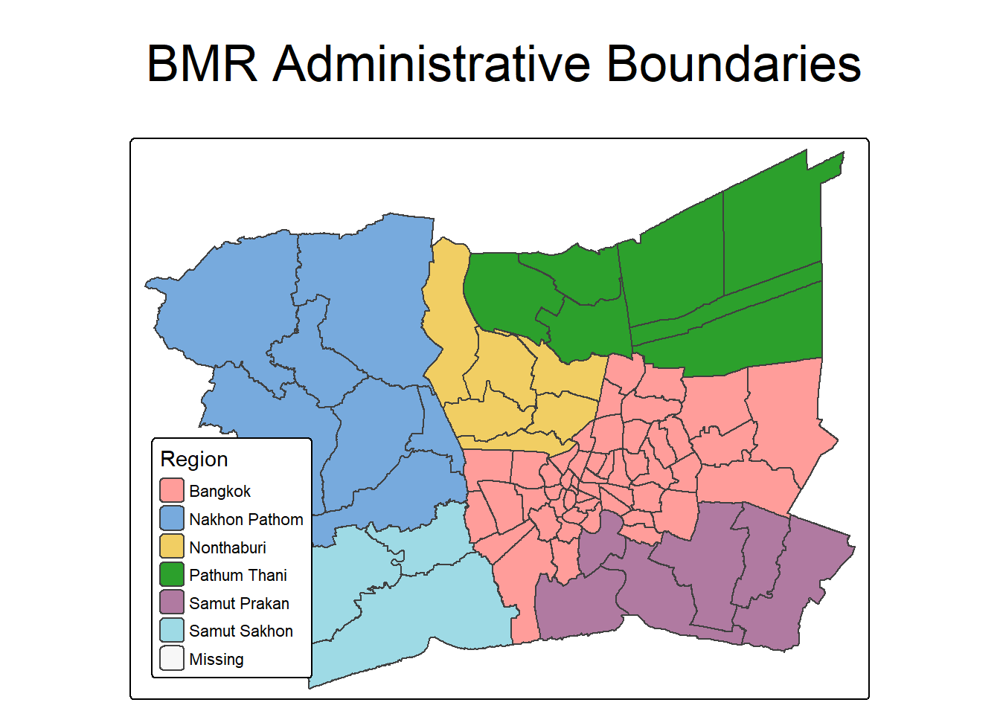
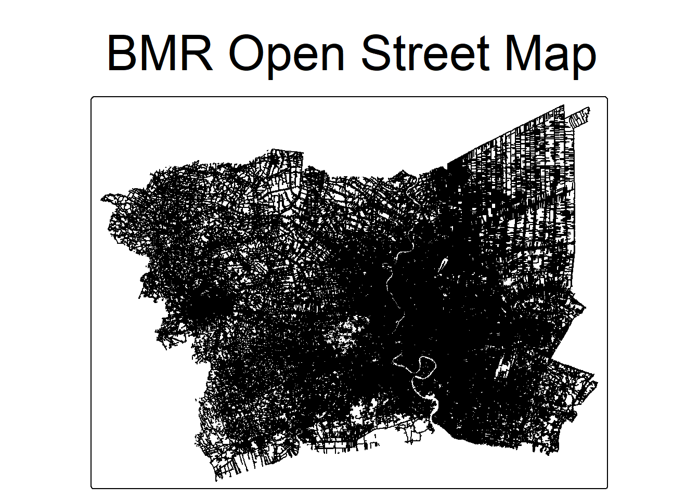
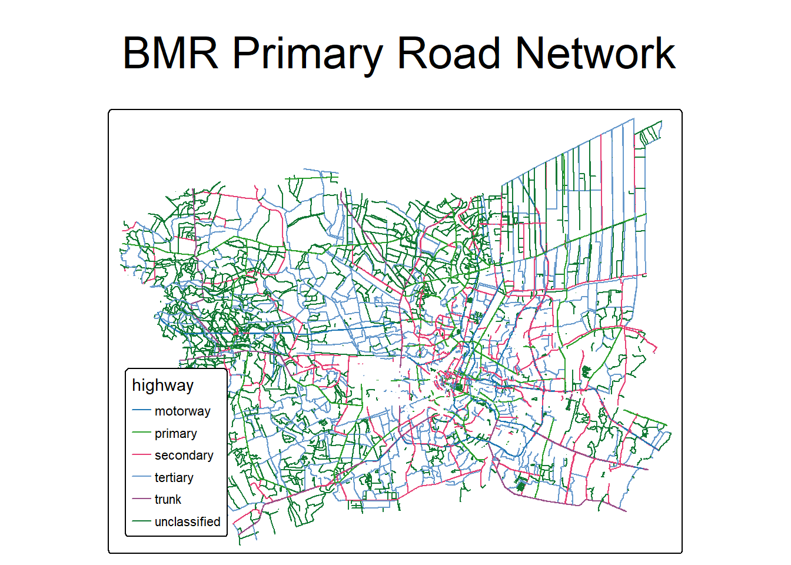

pacman::p_load(tidyverse, sf, tmap, spNetwork, spatstat, plotly, gtsummary, sparr)
#library(tidyverse, sf, tmap, readr) #, spNetwork, spatstat, plotly, gtsummary, sparr) Take-home Exercise 01
Applying spatial and spatio-temporal point pattern analysis methods to identify factors affecting road traffic accidents in the Bangkok Metropolitan Region.
1 Assignment: Geospatial analytics for Public safety
Reference: ISSS626 Take-home Exercise 1: Geospatial Analytics for Public Safety
2 Overview
This take-home exercise investigates the spatial and/or spatio-temporal patterns of public-safety point events using road traffic accidents within the Bangkok Greater Metropolitan Area.
The object of the exercise are:
To prepare and integrate real-world geospatial and temporal data for spatial and spatio-temporal point-pattern analysis.
To investigate first-order properties of the point pattern by examining how the intensity or distribution of events varies across space and/or time.
To investigate second-order properties by examining whether events exhibit evidence of spatial or spatio-temporal interaction, such as clustering, inhibition, or approximate randomness.
To critically evaluate the analytical assumptions, methodological choices, and limitations associated with the selected point-pattern methods.
To communicate the analytical findings effectively through appropriate geovisualisation and geocommunication.
To translate the analytical evidence into meaningful implications for public-safety planning and management.
3 The data
The following 3 datasets will be used in this exercise.
| Dataset Name | Description | Format | Source |
|---|---|---|---|
| Thailand Road Accident [2019-2022] | Data on road accidents in Thailand, including details on location, severity, and date of incidents. | CSV | Kaggle |
| Thailand Roads (OpenStreetMap Export) | OpenStreetMap Geospatial data of Thailand. | ESRI Shapefile | Humanitarian Data Exchange (HDX) |
| Thailand - Subnational Administrative Boundaries | Boundaries of Thailand’s Geospatial dataset. | ESRI Shapefile | Humanitarian Data Exchange (HDX) |
About Thailand Road Accident dataset
This dataset provides comprehensive statistics on recorded road accidents in Thailand, spanning from approximately 2019 to 2022. The data was sourced from raw information provided by the Office of the Permanent Secretary, Ministry of Transport, which is also utilized in this public dashboard for easier access and visualization. The dataset encompasses various aspects of road accidents and aims to shed light on the trends and patterns within this critical area of concern, analysis of this data could be crucial in guiding road safety policies and measures.
| Column | Description |
|---|---|
| acc_code | The accident code or identifier. |
| incident_datetime | The date and time of the accident occurrence. |
| report_datetime | The date and time when the accident was reported. |
| province_th | The name of the province in Thailand, written in Thai. |
| province_en | The name of the province in Thailand, written in English. |
| agency | The government agency responsible for the road and traffic management. |
| route | The route or road segment where the accident occurred. |
| vehicle_type | The type of vehicle involved in the accident. |
| presumed_cause | The presumed cause or reason for the accident. |
| accident_type | The type or nature of the accident. |
| number_of_vehicles_involved | The number of vehicles involved in the accident. |
| number_of_fatalities | The number of fatalities resulting from the accident. |
| number_of_injuries | The number of injuries resulting from the accident. |
| weather_condition | The weather condition at the time of the accident. |
| latitude | The latitude coordinate of the accident location. |
| longitude | The longitude coordinate of the accident location. |
| road_description | The description of the road type or configuration where the accident occurred. |
| slope_description | The description of the slope condition at the accident location. |
The original data has total 81735 accident records in all over Thailand from 2019-2022. But in this exercise I only analyse for road traffic accidents happened in Bangkok in the year of 2022 which are 1990 accidents in total.
4 Data preparation
Install and load R packages
pacman::p_load(readr, dplyr, lubridate, ggplot2, tmap, sf, spNetwork, spatstat, plotly, gtsummary, sparr)
Noteset reproducibility value
In order to ensures that stochastic algorithms and randomized spatial processes yield identical results every time the workflow runs, we need to set reproducibility value.
set.seed(1234)Import road traffic accident data
Loading Thailand road traffic accidents 2019-2022.
bmr_acc <- read_csv(
"../../data/takehome01/thai_road_accident_2019_2022.csv",
show_col_types = FALSE
)bmr_acc# A tibble: 81,735 × 18
acc_code incident_datetime report_datetime province_th province_en
<dbl> <dttm> <dttm> <chr> <chr>
1 571905 2019-01-01 00:00:00 2019-01-02 06:11:00 ลพบุรี Loburi
2 3790870 2019-01-01 00:03:00 2020-02-20 13:48:00 อุบลราชธานี Ubon Ratchathani
3 599075 2019-01-01 00:05:00 2019-01-01 10:35:00 ประจวบคีรีขันธ์ Prachuap Khiri …
4 571924 2019-01-01 00:20:00 2019-01-02 05:12:00 เชียงใหม่ Chiang Mai
5 599523 2019-01-01 00:25:00 2019-01-04 09:42:00 นครสวรรค์ Nakhon Sawan
6 571982 2019-01-01 00:30:00 2019-01-07 12:46:00 แม่ฮ่องสอน Mae Hong Son
7 612782 2019-01-01 00:30:00 2019-10-25 14:25:00 ชุมพร Chumphon
8 599235 2019-01-01 00:35:00 2019-01-02 16:23:00 สิงห์บุรี Sing Buri
9 600643 2019-01-01 00:40:00 2019-01-11 10:01:00 สงขลา Songkhla
10 599105 2019-01-01 00:45:00 2019-01-01 10:11:00 ตราด Trat
# ℹ 81,725 more rows
# ℹ 13 more variables: agency <chr>, route <chr>, vehicle_type <chr>,
# presumed_cause <chr>, accident_type <chr>,
# number_of_vehicles_involved <dbl>, number_of_fatalities <dbl>,
# number_of_injuries <dbl>, weather_condition <chr>, latitude <dbl>,
# longitude <dbl>, road_description <chr>, slope_description <chr>Checking for missing values
null_counts <- sum(is.na(bmr_acc))
null_counts[1] 718The dataset contains 718 missing values in total. We will check for missing values in each column to identify which columns have missing data. Listing the number of missing values for each column in the dataset
data.frame(
Column = colnames(bmr_acc),
Missing_Values = colSums(is.na(bmr_acc))
) Column Missing_Values
acc_code acc_code 0
incident_datetime incident_datetime 0
report_datetime report_datetime 0
province_th province_th 0
province_en province_en 0
agency agency 0
route route 0
vehicle_type vehicle_type 0
presumed_cause presumed_cause 0
accident_type accident_type 0
number_of_vehicles_involved number_of_vehicles_involved 0
number_of_fatalities number_of_fatalities 0
number_of_injuries number_of_injuries 0
weather_condition weather_condition 0
latitude latitude 359
longitude longitude 359
road_description road_description 0
slope_description slope_description 0There are 359 missing values in the latitude column and 359 missing values in the longitude column. Since these columns are crucial for spatial analysis, we will remove rows with missing values in these columns.
From Wikipedia, Bangkok Metropolitan Region (BMR) is the capital and most populous city of Thailand. It is located in the central part of the country, on the Chao Phraya River delta. The BMR consists of Bangkok and its surrounding provinces, including Nonthaburi, Pathum Thani, Samut Prakan, Nakhon Pathom, and Samut Sakhon. We will focus on the road traffic accidents that occurred these areas in the year of 2022. The dataset contains information on the location, severity, and date of accidents, which will be used for spatial and spatio-temporal point-pattern analysis.
bmr_acc_sf <- bmr_acc %>%
filter(province_en == "Bangkok" | province_en == "Nonthaburi" | province_en == "Pathum Thani" | province_en == "Samut Prakan" | province_en == "Nakhon Pathom" | province_en == "Samut Sakhon") %>%
#filter(year(incident_datetime) == 2022) %>%
filter(!is.na(longitude), !is.na(latitude)) %>%
st_as_sf(coords = c("longitude", "latitude"), crs = 4326) %>%
st_transform(crs = 32647) # UTM Zone 47N (EPSG:32647) for Bangkok Metropolitan RegionVerifying that the missing values have been removed
null_counts_after <- sum(is.na(bmr_acc_sf))
null_counts_after[1] 0Next we check for duplicate records in the dataset. Duplicate records can skew the analysis and lead to inaccurate results. We will identify and remove any duplicate rows based on the acc_code column, which serves as a unique identifier for each accident.
# Check for duplicate records based on the 'acc_code' column
duplicates <- bmr_acc_sf[duplicated(bmr_acc_sf$acc_code), ]
nrow(duplicates)[1] 0There are 0 duplicate records in the dataset based on the acc_code column. Therefore, no further action is needed to remove duplicates. In case there were duplicates, we would remove them using the following code:
Removing duplicate records
# Saving the cleaned and filtered road traffic accident data for the Bangkok Metropolitan Region in RDS format for future use.
#| echo: false
#| eval: false
write_csv(bmr_acc_sf, file = "../../data/takehome01/bmr_road_traffic_accidents_2019-2022.csv")#bmr_acc_sf <- read_csv("../../data/takehome01/bmr_road_traffic_accidents_2019-2022.csv") %>%
# st_set_sf(coords = c("longitude", "latitude"), crs = 4326) %>%
#st_transform(crs = 32647)Import Thailand subnational administrative boundaries data
adm_boundary <- st_read(dsn = "../../data/takehome01/tha_admin2.shp", # layer 2 for district level boundaries
layer = "tha_admin2") %>%
st_transform(crs = 32647)Reading layer `tha_admin2' from data source
`C:\hungthq\ISSS626-GAA\data\takehome01\tha_admin2.shp' using driver `ESRI Shapefile'
Simple feature collection with 928 features and 26 fields
Geometry type: MULTIPOLYGON
Dimension: XY
Bounding box: xmin: 97.34336 ymin: 5.613038 xmax: 105.637 ymax: 20.46507
Geodetic CRS: WGS 84Check the coordinate reference system (CRS) of the administrative boundaries
st_crs(adm_boundary) Coordinate Reference System:
User input: EPSG:32647
wkt:
PROJCRS["WGS 84 / UTM zone 47N",
BASEGEOGCRS["WGS 84",
ENSEMBLE["World Geodetic System 1984 ensemble",
MEMBER["World Geodetic System 1984 (Transit)"],
MEMBER["World Geodetic System 1984 (G730)"],
MEMBER["World Geodetic System 1984 (G873)"],
MEMBER["World Geodetic System 1984 (G1150)"],
MEMBER["World Geodetic System 1984 (G1674)"],
MEMBER["World Geodetic System 1984 (G1762)"],
MEMBER["World Geodetic System 1984 (G2139)"],
MEMBER["World Geodetic System 1984 (G2296)"],
ELLIPSOID["WGS 84",6378137,298.257223563,
LENGTHUNIT["metre",1]],
ENSEMBLEACCURACY[2.0]],
PRIMEM["Greenwich",0,
ANGLEUNIT["degree",0.0174532925199433]],
ID["EPSG",4326]],
CONVERSION["UTM zone 47N",
METHOD["Transverse Mercator",
ID["EPSG",9807]],
PARAMETER["Latitude of natural origin",0,
ANGLEUNIT["degree",0.0174532925199433],
ID["EPSG",8801]],
PARAMETER["Longitude of natural origin",99,
ANGLEUNIT["degree",0.0174532925199433],
ID["EPSG",8802]],
PARAMETER["Scale factor at natural origin",0.9996,
SCALEUNIT["unity",1],
ID["EPSG",8805]],
PARAMETER["False easting",500000,
LENGTHUNIT["metre",1],
ID["EPSG",8806]],
PARAMETER["False northing",0,
LENGTHUNIT["metre",1],
ID["EPSG",8807]]],
CS[Cartesian,2],
AXIS["(E)",east,
ORDER[1],
LENGTHUNIT["metre",1]],
AXIS["(N)",north,
ORDER[2],
LENGTHUNIT["metre",1]],
USAGE[
SCOPE["Navigation and medium accuracy spatial referencing."],
AREA["Between 96°E and 102°E, northern hemisphere between equator and 84°N, onshore and offshore. China. Indonesia. Laos. Malaysia - West Malaysia. Mongolia. Myanmar (Burma). Russian Federation. Thailand."],
BBOX[0,96,84,102]],
ID["EPSG",32647]]Coordinate Reference System: User input: EPSG:32647 wkt: PROJCRS[“WGS 84 / UTM zone 47N”, BASEGEOGCRS[“WGS 84”, ENSEMBLE[“World Geodetic System 1984 ensemble”, MEMBER[“World Geodetic System 1984 (Transit)”], MEMBER[“World Geodetic System 1984 (G730)”], MEMBER[“World Geodetic System 1984 (G873)”], MEMBER[“World Geodetic System 1984 (G1150)”], MEMBER[“World Geodetic System 1984 (G1674)”], MEMBER[“World Geodetic System 1984 (G1762)”], MEMBER[“World Geodetic System 1984 (G2139)”], MEMBER[“World Geodetic System 1984 (G2296)”], ELLIPSOID[“WGS 84”,6378137,298.257223563, LENGTHUNIT[“metre”,1]], ENSEMBLEACCURACY[2.0]], PRIMEM[“Greenwich”,0, ANGLEUNIT[“degree”,0.0174532925199433]], ID[“EPSG”,4326]], CONVERSION[“UTM zone 47N”, METHOD[“Transverse Mercator”, ID[“EPSG”,9807]], PARAMETER[“Latitude of natural origin”,0, ANGLEUNIT[“degree”,0.0174532925199433], ID[“EPSG”,8801]], PARAMETER[“Longitude of natural origin”,99, ANGLEUNIT[“degree”,0.0174532925199433], ID[“EPSG”,8802]], PARAMETER[“Scale factor at natural origin”,0.9996, SCALEUNIT[“unity”,1], ID[“EPSG”,8805]], PARAMETER[“False easting”,500000, LENGTHUNIT[“metre”,1], ID[“EPSG”,8806]], PARAMETER[“False northing”,0, LENGTHUNIT[“metre”,1], ID[“EPSG”,8807]]], CS[Cartesian,2], AXIS[“(E)”,east, ORDER[1], LENGTHUNIT[“metre”,1]], AXIS[“(N)”,north, ORDER[2], LENGTHUNIT[“metre”,1]], USAGE[ SCOPE[“Navigation and medium accuracy spatial referencing.”], AREA[“Between 96°E and 102°E, northern hemisphere between equator and 84°N, onshore and offshore. China. Indonesia. Laos. Malaysia - West Malaysia. Mongolia. Myanmar (Burma). Russian Federation. Thailand.”], BBOX[0,96,84,102]], ID[“EPSG”,32647]]
Observing the administrative boundaries data, we can see that it contains information about the districts within Thailand, including their names and geometries. This data will be useful for spatial analysis and visualization of road traffic accidents in relation to administrative boundaries.
glimpse(adm_boundary) # Rows: 928
Columns: 27
$ adm2_name <chr> "Phra Nakhon", "Dusit", "Nong Chok", "Bang Rak", "Bang Khen…
$ adm2_name1 <chr> "พระนคร", "ดุสิต", "หนองจอก", "บางรัก", "บางเขน", "บางกะปิ", "ป…
$ adm2_name2 <chr> NA, NA, NA, NA, NA, NA, NA, NA, NA, NA, NA, NA, NA, NA, NA,…
$ adm2_name3 <chr> NA, NA, NA, NA, NA, NA, NA, NA, NA, NA, NA, NA, NA, NA, NA,…
$ adm2_pcode <chr> "TH1001", "TH1002", "TH1003", "TH1004", "TH1005", "TH1006",…
$ adm1_name <chr> "Bangkok", "Bangkok", "Bangkok", "Bangkok", "Bangkok", "Ban…
$ adm1_name1 <chr> "กรุงเทพมหานคร", "กรุงเทพมหานคร", "กรุงเทพมหานคร", "กรุงเทพมหาน…
$ adm1_name2 <chr> NA, NA, NA, NA, NA, NA, NA, NA, NA, NA, NA, NA, NA, NA, NA,…
$ adm1_name3 <chr> NA, NA, NA, NA, NA, NA, NA, NA, NA, NA, NA, NA, NA, NA, NA,…
$ adm1_pcode <chr> "TH10", "TH10", "TH10", "TH10", "TH10", "TH10", "TH10", "TH…
$ adm0_name <chr> "Thailand", "Thailand", "Thailand", "Thailand", "Thailand",…
$ adm0_name1 <chr> "ประเทศไทย", "ประเทศไทย", "ประเทศไทย", "ประเทศไทย", "ประเทศ…
$ adm0_name2 <chr> NA, NA, NA, NA, NA, NA, NA, NA, NA, NA, NA, NA, NA, NA, NA,…
$ adm0_name3 <chr> NA, NA, NA, NA, NA, NA, NA, NA, NA, NA, NA, NA, NA, NA, NA,…
$ adm0_pcode <chr> "TH", "TH", "TH", "TH", "TH", "TH", "TH", "TH", "TH", "TH",…
$ valid_on <date> 2022-01-22, 2022-01-22, 2022-01-22, 2022-01-22, 2022-01-22…
$ valid_to <date> NA, NA, NA, NA, NA, NA, NA, NA, NA, NA, NA, NA, NA, NA, NA…
$ area_sqkm <dbl> 5.389902, 11.367963, 237.516621, 4.032189, 40.840932, 27.55…
$ version <chr> "v01", "v01", "v01", "v01", "v01", "v01", "v01", "v01", "v0…
$ lang <chr> "en", "en", "en", "en", "en", "en", "en", "en", "en", "en",…
$ lang1 <chr> "th", "th", "th", "th", "th", "th", "th", "th", "th", "th",…
$ lang2 <chr> NA, NA, NA, NA, NA, NA, NA, NA, NA, NA, NA, NA, NA, NA, NA,…
$ lang3 <chr> NA, NA, NA, NA, NA, NA, NA, NA, NA, NA, NA, NA, NA, NA, NA,…
$ adm2_ref_n <chr> "Phra Nakhon", "Dusit", "Nong Chok", "Bang Rak", "Bang Khen…
$ center_lat <dbl> 13.75567, 13.77648, 13.84227, 13.72818, 13.87125, 13.77900,…
$ center_lon <dbl> 100.4969, 100.5146, 100.8582, 100.5262, 100.6363, 100.6408,…
$ geometry <MULTIPOLYGON [m]> MULTIPOLYGON (((662263.2 15..., MULTIPOLYGON (…Rows: 928 Columns: 27 $ adm2_name
Filtering the administrative boundaries to include only the districts within the Bangkok Metropolitan Region (BMR) for spatial analysis.
bmr_adm_boundary <- adm_boundary %>%
select("adm1_name") %>%
filter(adm1_name == "Bangkok" | adm1_name == "Nonthaburi" | adm1_name == "Pathum Thani" | adm1_name == "Samut Prakan" | adm1_name == "Nakhon Pathom" | adm1_name == "Samut Sakhon")Filtering the administrative boundaries to include only the districts within the Bangkok Metropolitan Region (BMR) in RDS format for spatial analysis.
bmr_adm_boundary <- read_rds("../../data/takehome01/bmr_adm_boundary.rds")bmr_adm_boundarySimple feature collection with 79 features and 1 field
Geometry type: MULTIPOLYGON
Dimension: XY
Bounding box: xmin: 587893.5 ymin: 1484414 xmax: 712440.5 ymax: 1579076
Projected CRS: WGS 84 / UTM zone 47N
First 10 features:
adm1_name geometry
1 Bangkok MULTIPOLYGON (((662263.2 15...
2 Bangkok MULTIPOLYGON (((664304.4 15...
3 Bangkok MULTIPOLYGON (((706774.6 15...
4 Bangkok MULTIPOLYGON (((664040.2 15...
5 Bangkok MULTIPOLYGON (((673966.4 15...
6 Bangkok MULTIPOLYGON (((676080.6 15...
7 Bangkok MULTIPOLYGON (((664236.5 15...
8 Bangkok MULTIPOLYGON (((663880.5 15...
9 Bangkok MULTIPOLYGON (((674748.8 15...
10 Bangkok MULTIPOLYGON (((694735.5 15...Visualizing the administrative boundaries of the Bangkok Metropolitan Region (BMR) using the tmap package.
tmap_mode("plot")
tm_shape(bmr_adm_boundary) +
tm_fill(col = "adm1_name", title = "Region") +
tm_borders() +
tm_layout(main.title = "BMR Administrative Boundaries",
main.title.position = "center",
main.title.size = 3,
#title.position = c("center", "top"),
legend.position = c("left", "bottom")
)
Import Thailand road network data from OpenStreetMap
Import road network data for Thailand from OpenStreetMap using the sf package.
thailand_roads <- st_read(dsn = "../../data/takehome01/hotosm_tha_roads_lines_shp.shp", layer = "hotosm_tha_roads_lines_shp") %>%
st_set_crs(4326) %>% # Set the coordinate reference system to WGS 84 (EPSG:4326)
st_transform(crs = 32647) # UTM Zone 47N (EPSG:32647) for Bangkok Metropolitan RegionReading layer `hotosm_tha_roads_lines_shp' from data source
`C:\hungthq\ISSS626-GAA\data\takehome01\hotosm_tha_roads_lines_shp.shp'
using driver `ESRI Shapefile'
Simple feature collection with 2833401 features and 14 fields
Geometry type: MULTILINESTRING
Dimension: XY
Bounding box: xmin: 97.33814 ymin: 5.643645 xmax: 105.6528 ymax: 20.47168
Geodetic CRS: WGS 84The road network data contains ~2.8M road segments in Thailand. We will filter the data to include only the road segments within the Bangkok Metropolitan Region (BMR) for spatial analysis.
bmr_roads_orig <- thailand_roads %>%
st_intersection(bmr_adm_boundary) # Filter road segments within the BMR
NoteNote
The geospatial data is in the form of MULTILINESTRING geometries, which represent the road segments as lines. To simplify the analysis, we will convert the MULTILINESTRING geometries to LINESTRING geometries using the st_cast() function from the sf package. This will allow us to work with individual road segments as separate features.
bmr_roads <- bmr_roads_orig %>%
st_cast("LINESTRING") # Convert MULTILINESTRING to LINESTRING geometriesCheck the coordinate reference system of the BMR road network data
st_crs(bmr_roads) Coordinate Reference System:
User input: EPSG:32647
wkt:
PROJCRS["WGS 84 / UTM zone 47N",
BASEGEOGCRS["WGS 84",
ENSEMBLE["World Geodetic System 1984 ensemble",
MEMBER["World Geodetic System 1984 (Transit)"],
MEMBER["World Geodetic System 1984 (G730)"],
MEMBER["World Geodetic System 1984 (G873)"],
MEMBER["World Geodetic System 1984 (G1150)"],
MEMBER["World Geodetic System 1984 (G1674)"],
MEMBER["World Geodetic System 1984 (G1762)"],
MEMBER["World Geodetic System 1984 (G2139)"],
MEMBER["World Geodetic System 1984 (G2296)"],
ELLIPSOID["WGS 84",6378137,298.257223563,
LENGTHUNIT["metre",1]],
ENSEMBLEACCURACY[2.0]],
PRIMEM["Greenwich",0,
ANGLEUNIT["degree",0.0174532925199433]],
ID["EPSG",4326]],
CONVERSION["UTM zone 47N",
METHOD["Transverse Mercator",
ID["EPSG",9807]],
PARAMETER["Latitude of natural origin",0,
ANGLEUNIT["degree",0.0174532925199433],
ID["EPSG",8801]],
PARAMETER["Longitude of natural origin",99,
ANGLEUNIT["degree",0.0174532925199433],
ID["EPSG",8802]],
PARAMETER["Scale factor at natural origin",0.9996,
SCALEUNIT["unity",1],
ID["EPSG",8805]],
PARAMETER["False easting",500000,
LENGTHUNIT["metre",1],
ID["EPSG",8806]],
PARAMETER["False northing",0,
LENGTHUNIT["metre",1],
ID["EPSG",8807]]],
CS[Cartesian,2],
AXIS["(E)",east,
ORDER[1],
LENGTHUNIT["metre",1]],
AXIS["(N)",north,
ORDER[2],
LENGTHUNIT["metre",1]],
USAGE[
SCOPE["Navigation and medium accuracy spatial referencing."],
AREA["Between 96°E and 102°E, northern hemisphere between equator and 84°N, onshore and offshore. China. Indonesia. Laos. Malaysia - West Malaysia. Mongolia. Myanmar (Burma). Russian Federation. Thailand."],
BBOX[0,96,84,102]],
ID["EPSG",32647]]Ploting the road network data for the Bangkok Metropolitan Region (BMR) using the tmap package.
tmap_mode("plot")
tm_shape(bmr_roads) +
tm_lines() +
tm_layout(main.title = "BMR Open Street Map",
main.title.position = "center",
main.title.size = 3,
legend.position = c("left", "bottom")
)
Exploring the attributes of the BMR road network data to understand the available information for analysis.
glimpse(bmr_roads) Rows: 592,641
Columns: 16
$ name <chr> NA, NA, NA, "ถนนราชดำเนินกลาง", "ถนนราชดำเนินกลาง", NA, NA, NA,…
$ name_en <chr> NA, NA, NA, "Ratchadamnoen Klang Road", "Ratchadamnoen Klan…
$ highway <chr> "steps", "footway", "footway", "secondary", "secondary", "s…
$ surface <chr> NA, NA, NA, "asphalt", "asphalt", NA, "paving_stones", "pav…
$ smoothness <chr> NA, NA, NA, NA, NA, NA, NA, NA, NA, "excellent", NA, NA, NA…
$ width <chr> NA, NA, NA, NA, NA, NA, NA, NA, "5", NA, NA, NA, NA, NA, NA…
$ lanes <chr> NA, NA, NA, NA, "3", NA, NA, NA, NA, "3", NA, NA, NA, NA, N…
$ oneway <chr> NA, NA, NA, "yes", "yes", "yes", NA, NA, "yes", "yes", NA, …
$ bridge <chr> NA, NA, NA, "yes", "yes", NA, NA, NA, NA, NA, NA, NA, NA, N…
$ layer <chr> NA, NA, NA, "1", "1", NA, NA, NA, NA, NA, NA, NA, NA, NA, N…
$ source <chr> NA, NA, NA, NA, NA, NA, NA, NA, NA, NA, NA, NA, NA, NA, NA,…
$ name_th <chr> NA, NA, NA, "ถนนราชดำเนินกลาง", "ถนนราชดำเนินกลาง", NA, NA, NA,…
$ osm_id <dbl> 826834653, 1264028727, 1264028728, 175803643, 175803646, 70…
$ osm_type <chr> "ways_line", "ways_line", "ways_line", "ways_line", "ways_l…
$ adm1_name <chr> "Bangkok", "Bangkok", "Bangkok", "Bangkok", "Bangkok", "Ban…
$ geometry <LINESTRING [m]> LINESTRING (661956.2 151980..., LINESTRING (6612…Observing the attributes of the BMR road network data, we can see that it contains information about the road segments, including their names, types, and geometries. This data will be useful for spatial analysis and visualization of road traffic accidents in relation to the road network. For further analysis, we will focus on the road segments that are classified as “primary” roads, which are major roads that connect different regions and are likely to have higher traffic volumes. We will filter the data to include only these primary road segments for spatial analysis from “highway” attribute.
Displaying the unique values in the “highway” attribute to identify the different types of roads in the BMR road network data.
unique(bmr_roads$highway) [1] "steps" "footway" "secondary" "service"
[5] "residential" "primary" "tertiary_link" "path"
[9] "secondary_link" "pedestrian" "tertiary" "primary_link"
[13] "unclassified" "corridor" "cycleway" "busway"
[17] "construction" "motorway_link" "track" "trunk_link"
[21] "trunk" "motorway" "proposed" "road"
[25] "raceway" "platform" For the study purpose, we will focus on the primary roads in the BMR road network data. The primary roads are classified as “motoway”, “trunk”, “primary”, “secondary”, “tertiary” and “unclassified”. We will filter the data to include only these primary road segments for spatial analysis.
hw_types <- c("motorway", "trunk", "primary", "secondary", "tertiary", "unclassified")
bmr_roads_filtered <- bmr_roads %>%
select("highway") %>%
filter(highway %in% hw_types)glimpse(bmr_roads_filtered)Rows: 24,054
Columns: 2
$ highway <chr> "secondary", "secondary", "primary", "secondary", "secondary"…
$ geometry <LINESTRING [m]> LINESTRING (661606.9 152137..., LINESTRING (661637…#plotting the filtered primary road network data for the Bangkok Metropolitan Region (BMR) using the tmap package.
tmap_mode("plot")
tm_shape(bmr_roads_filtered) +
tm_lines(col = "highway", title = "Road Type") +
tm_layout(main.title = "BMR Primary Road Network",
main.title.position = "center",
main.title.size = 3,
legend.position = c("left", "bottom")
)
NoteNote
By filtering the road network data to include only the primary roads, we reduce the size of the dataset from 593,000 road segments to 24,000 road segments. This will make the spatial analysis more efficient and focused on the major roads that are likely to have higher traffic volumes and accident rates.
# save the filtered primary road network data for the Bangkok Metropolitan Region (BMR) in RDS format for future use.
saveRDS(bmr_roads_filtered, file = "../../data/takehome01/bmr_primary_roads.rds")bmr_primary_roads <- read_rds("../../data/takehome01/bmr_primary_roads.rds")5 Exploratory Data Analysis (EDA)
In this section, we will perform exploratory data analysis (EDA) on the road traffic accident data for the Bangkok Metropolitan Region (BMR) in the year 2022. The goal of EDA is to understand the distribution and characteristics of the data, identify patterns and trends, and detect any anomalies or outliers that may affect the analysis.
Overall plot
Ploting 3 datasets onto a single choropleth map to have an general view.
tmap_mode('plot')
tm_shape(bmr_adm_boundary) +
tm_polygons(col='adm1_name', alpha=0.6, border.col="black", lwd=0.7, title = "Region") +
tm_shape(bmr_primary_roads) +
tm_lines(col = "darkgreen", lwd=1, alpha = 0.8) +
tm_shape(bmr_acc_sf) +
tm_dots(col = "red", size = 0.1, alpha = 0.5) +
tm_layout(
main.title = "Road Traffic Accidents in Bangkok Metropolitan Region (2022)",
main.title.position = c("center", "top"),
main.title.size = 0.9,
frame = FALSE,
legend.outside = TRUE,
legend.outside.position = "left",
legend.outside.size = 0.25,
legend.text.size = 0.55,
legend.title.size = 0.7
)